Anilios
The genus Anilios (family Typhlopidae) has 48 living species in SnakeList (none venomous), recorded in 2 countries.
- 48living species
- 48non-venomous
- 2countries
About the genus
A genus of the family Typhlopidae (blind snakes).
Species
Showing 48 species
- No photo yetBarrow Island Blind SnakeAnilios longissimus
- No photo yetBatillus Blind SnakeAnilios batillus
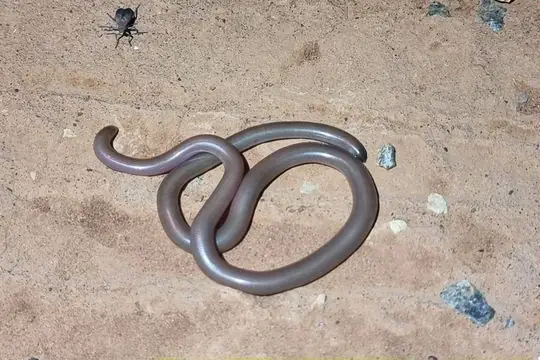
Beaked Blind SnakeAnilios waitii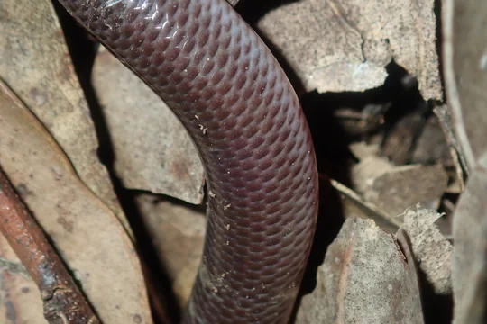
Blackish Blind SnakeAnilios nigrescens- No photo yetBlunt-snouted BlindsnakeAnilios obtusifrons
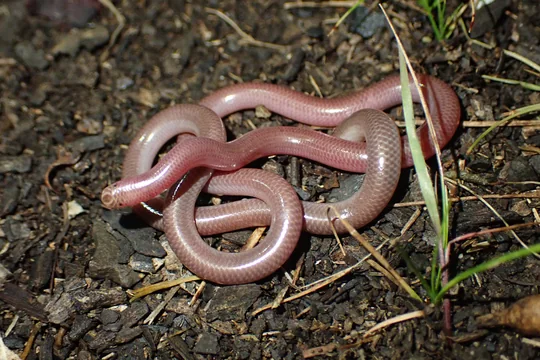
Brown-snouted Blind SnakeAnilios wiedii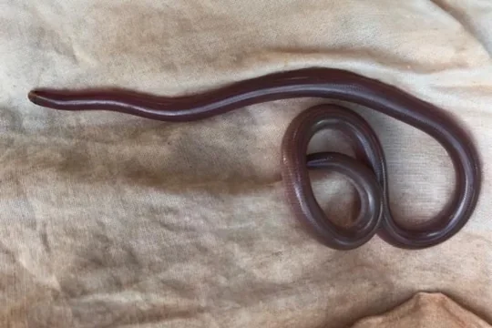
Buff-snouted Blind SnakeAnilios margaretae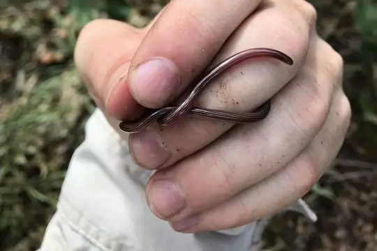
Cape York Striped Blind SnakeAnilios chamodracaena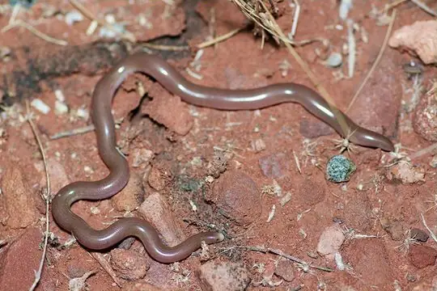
Centralian Blind SnakeAnilios centralis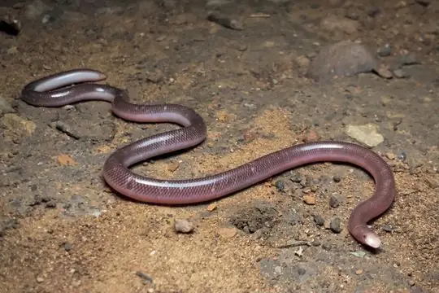
Claw-snouted Blind SnakeAnilios unguirostris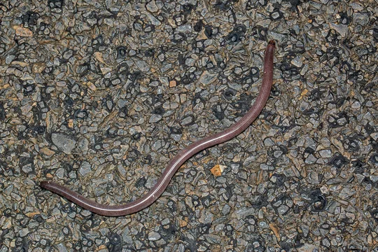
Dark-spined Blind SnakeAnilios bicolor- No photo yetDarwin Blind SnakeAnilios tovelli
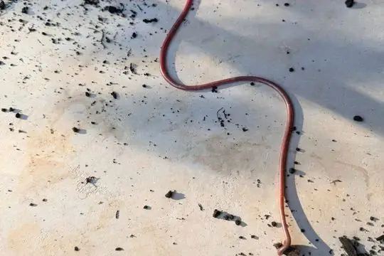
Fannie Bay Blind SnakeAnilios nema- No photo yetFassifern Blind SnakeAnilios insperatus
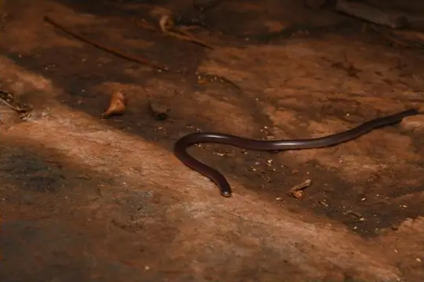
Gane's Blind SnakeAnilios ganei- No photo yetGroote Dwarf Blind SnakeAnilios minimus
- No photo yetHale River Blind SnakeAnilios fossor
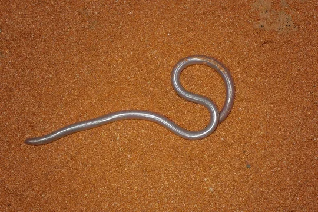
Interior Blind SnakeAnilios endoterus- No photo yetKimberley Deep-soil Blind SnakeAnilios howi
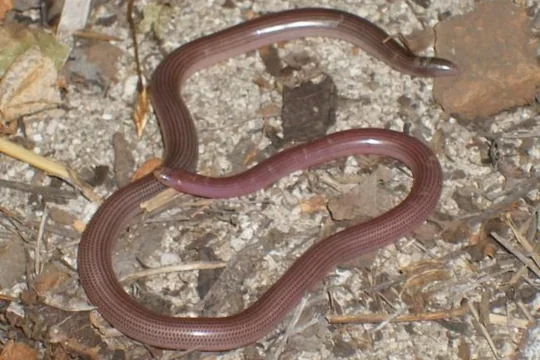
Kimberley Shallow-soil Blind SnakeAnilios kimberleyensis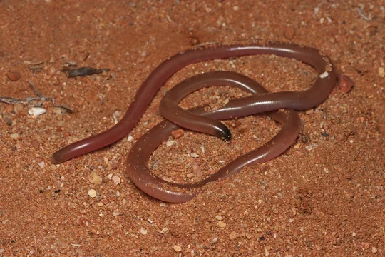
Long-beaked Blind SnakeAnilios grypus- No photo yetMornington Blind SnakeAnilios vagurima
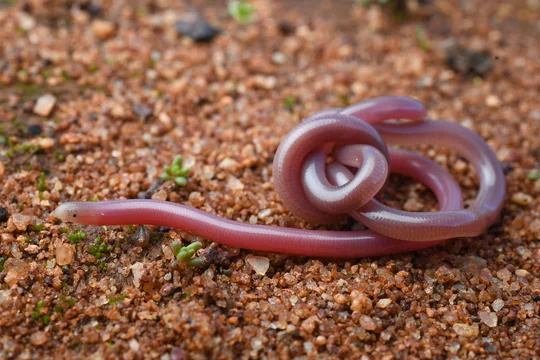
Murchison Blind SnakeAnilios leptosoma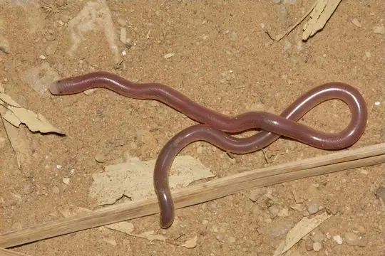
Northern Blind Snake (diversus)Anilios diversus- No photo yetNorthern New Guinea BlindsnakeAnilios erycinus
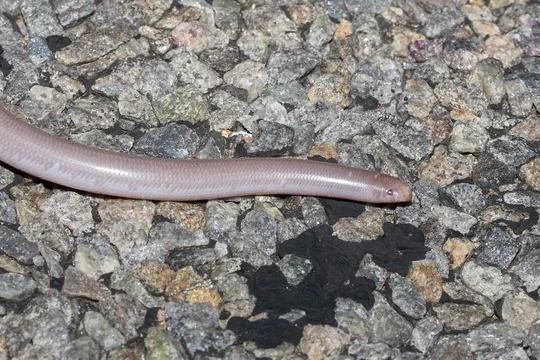
Pale-headed Blind SnakeAnilios hamatus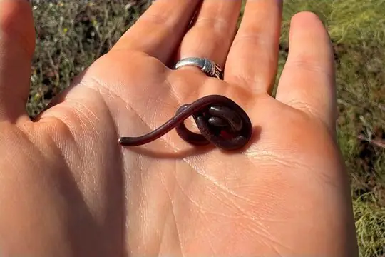
Pilbara Blind SnakeAnilios pilbarensis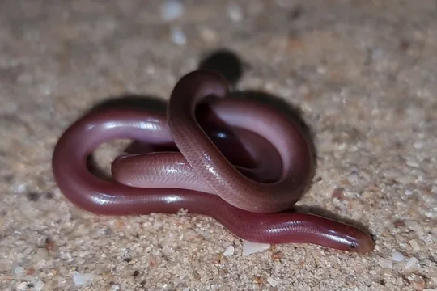
Prong-snouted Blind SnakeAnilios bituberculatus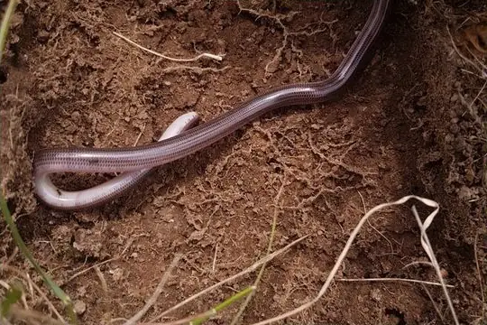
Proximus Blind SnakeAnilios proximus- No photo yetRoberts' Blind SnakeAnilios robertsi
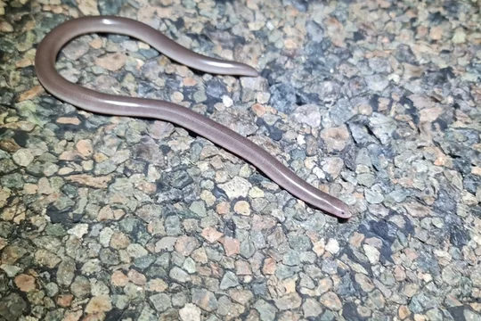
Robust Blind SnakeAnilios ligatus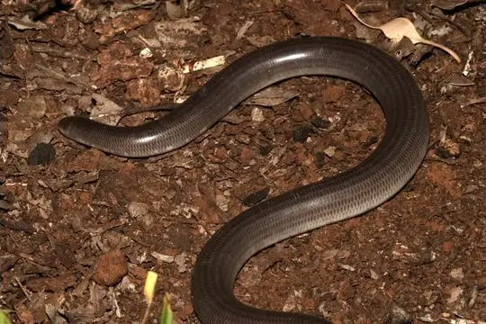
Rotund Blind SnakeAnilios pinguis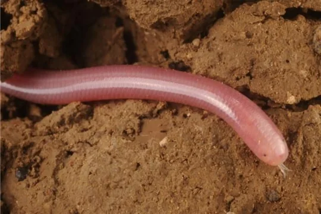
Round-tailed Blind SnakeAnilios aspina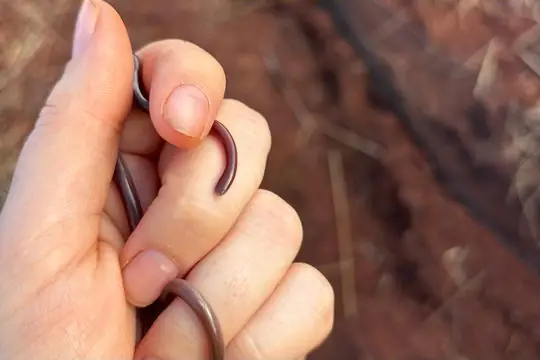
Sand-diving Blind SnakeAnilios ammodytes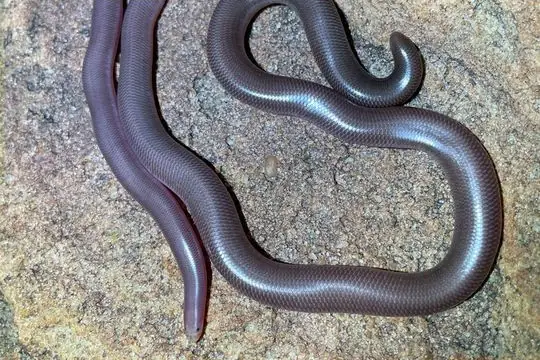
Sandamara Blind SnakeAnilios troglodytes- No photo yetSharp-snouted BlindsnakeAnilios systenos
- No photo yetSmall-eyed Blind SnakeAnilios micromma
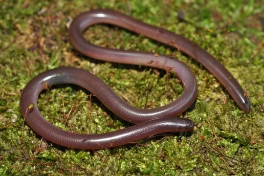
Small-headed Blind Snake (affinis)Anilios affinis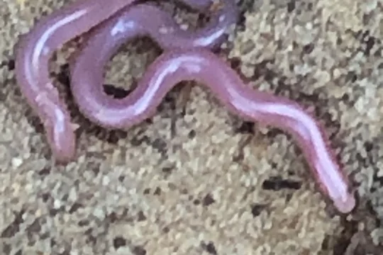
Southern Blind Snake (australis)Anilios australis- No photo yetSplendid Blind SnakeAnilios splendidus
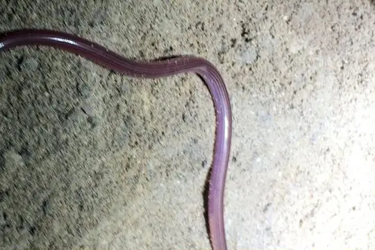
Striate Blind SnakeAnilios broomi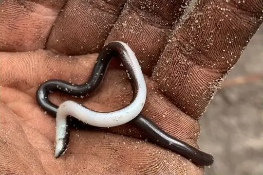
Sylvia's Blind SnakeAnilios silvia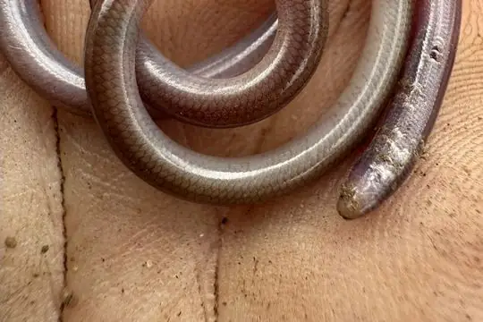
Top End Blind SnakeAnilios guentheri Torres Strait BlindsnakeAnilios torresianus
Torres Strait BlindsnakeAnilios torresianus- No photo yetWest Kimberley BlindsnakeAnilios zonula
 White-tailed BlindsnakeAnilios leucoproctus
White-tailed BlindsnakeAnilios leucoproctus- No photo yetYampi Blind SnakeAnilios yampiensis
- No photo yetYirrkala Blind SnakeAnilios yirrikalae
No snakes in Anilios match.
About the genus Anilios
- Distribution: living species recorded in 2 countries, on one continent: Oceania.
- Family: Typhlopidae.
- Countries and territories: Australia, Papua New Guinea.
Compare its species
Its living species side by side. Lengths come only from SnakeList’s reviewed, sourced accounts; the others are left blank rather than guessed.
Show the table of all 48 species
| Species | Venom | Recorded in | Adult length (reviewed accounts) |
|---|---|---|---|
| Barrow Island Blind Snake Anilios longissimus | Non-venomous | 1 country (Oceania) | No reviewed account yet |
| Batillus Blind Snake Anilios batillus | Non-venomous | 1 country (Oceania) | No reviewed account yet |
| Beaked Blind Snake Anilios waitii | Non-venomous | 1 country (Oceania) | No reviewed account yet |
| Blackish Blind Snake Anilios nigrescens | Non-venomous | 1 country (Oceania) | No reviewed account yet |
| Blunt-snouted Blindsnake Anilios obtusifrons | Non-venomous | 1 country (Oceania) | No reviewed account yet |
| Brown-snouted Blind Snake Anilios wiedii | Non-venomous | 1 country (Oceania) | No reviewed account yet |
| Buff-snouted Blind Snake Anilios margaretae | Non-venomous | 1 country (Oceania) | No reviewed account yet |
| Cape York Striped Blind Snake Anilios chamodracaena | Non-venomous | 1 country (Oceania) | No reviewed account yet |
| Centralian Blind Snake Anilios centralis | Non-venomous | 1 country (Oceania) | No reviewed account yet |
| Claw-snouted Blind Snake Anilios unguirostris | Non-venomous | 1 country (Oceania) | No reviewed account yet |
| Dark-spined Blind Snake Anilios bicolor | Non-venomous | 1 country (Oceania) | No reviewed account yet |
| Darwin Blind Snake Anilios tovelli | Non-venomous | 1 country (Oceania) | No reviewed account yet |
| Fannie Bay Blind Snake Anilios nema | Non-venomous | 1 country (Oceania) | No reviewed account yet |
| Fassifern Blind Snake Anilios insperatus | Non-venomous | 1 country (Oceania) | No reviewed account yet |
| Gane's Blind Snake Anilios ganei | Non-venomous | 1 country (Oceania) | No reviewed account yet |
| Groote Dwarf Blind Snake Anilios minimus | Non-venomous | 1 country (Oceania) | No reviewed account yet |
| Hale River Blind Snake Anilios fossor | Non-venomous | 1 country (Oceania) | No reviewed account yet |
| Interior Blind Snake Anilios endoterus | Non-venomous | 1 country (Oceania) | No reviewed account yet |
| Kimberley Deep-soil Blind Snake Anilios howi | Non-venomous | 1 country (Oceania) | No reviewed account yet |
| Kimberley Shallow-soil Blind Snake Anilios kimberleyensis | Non-venomous | 1 country (Oceania) | No reviewed account yet |
| Long-beaked Blind Snake Anilios grypus | Non-venomous | 1 country (Oceania) | No reviewed account yet |
| Mornington Blind Snake Anilios vagurima | Non-venomous | 1 country (Oceania) | No reviewed account yet |
| Murchison Blind Snake Anilios leptosoma | Non-venomous | 1 country (Oceania) | No reviewed account yet |
| Northern Blind Snake (diversus) Anilios diversus | Non-venomous | 1 country (Oceania) | No reviewed account yet |
| Northern New Guinea Blindsnake Anilios erycinus | Non-venomous | 1 country (Oceania) | No reviewed account yet |
| Pale-headed Blind Snake Anilios hamatus | Non-venomous | 1 country (Oceania) | No reviewed account yet |
| Pilbara Blind Snake Anilios pilbarensis | Non-venomous | 1 country (Oceania) | No reviewed account yet |
| Prong-snouted Blind Snake Anilios bituberculatus | Non-venomous | 1 country (Oceania) | No reviewed account yet |
| Proximus Blind Snake Anilios proximus | Non-venomous | 1 country (Oceania) | No reviewed account yet |
| Roberts' Blind Snake Anilios robertsi | Non-venomous | 1 country (Oceania) | No reviewed account yet |
| Robust Blind Snake Anilios ligatus | Non-venomous | 1 country (Oceania) | No reviewed account yet |
| Rotund Blind Snake Anilios pinguis | Non-venomous | 1 country (Oceania) | No reviewed account yet |
| Round-tailed Blind Snake Anilios aspina | Non-venomous | 1 country (Oceania) | No reviewed account yet |
| Sand-diving Blind Snake Anilios ammodytes | Non-venomous | 1 country (Oceania) | No reviewed account yet |
| Sandamara Blind Snake Anilios troglodytes | Non-venomous | 1 country (Oceania) | No reviewed account yet |
| Sharp-snouted Blindsnake Anilios systenos | Non-venomous | 1 country (Oceania) | No reviewed account yet |
| Small-eyed Blind Snake Anilios micromma | Non-venomous | 1 country (Oceania) | No reviewed account yet |
| Small-headed Blind Snake (affinis) Anilios affinis | Non-venomous | 1 country (Oceania) | No reviewed account yet |
| Southern Blind Snake (australis) Anilios australis | Non-venomous | 1 country (Oceania) | No reviewed account yet |
| Splendid Blind Snake Anilios splendidus | Non-venomous | 1 country (Oceania) | No reviewed account yet |
| Striate Blind Snake Anilios broomi | Non-venomous | 1 country (Oceania) | No reviewed account yet |
| Sylvia's Blind Snake Anilios silvia | Non-venomous | 1 country (Oceania) | No reviewed account yet |
| Top End Blind Snake Anilios guentheri | Non-venomous | 1 country (Oceania) | No reviewed account yet |
| Torres Strait Blindsnake Anilios torresianus | Non-venomous | 1 country (Oceania) | No reviewed account yet |
| West Kimberley Blindsnake Anilios zonula | Non-venomous | 1 country (Oceania) | No reviewed account yet |
| White-tailed Blindsnake Anilios leucoproctus | Non-venomous | 1 country (Oceania) | No reviewed account yet |
| Yampi Blind Snake Anilios yampiensis | Non-venomous | 1 country (Oceania) | No reviewed account yet |
| Yirrkala Blind Snake Anilios yirrikalae | Non-venomous | 1 country (Oceania) | No reviewed account yet |